 |
Kuratiert nach Infrastruktur, Automatisierung und Selfhosting — nicht nach Sternen. |
INFRASTRUCTURE
NETWORKING
AUTOMATION & DEVOPS
WEB & SERVICES
AI / EXPERIMENTAL


ENGINEERING METRICS

SNAKE — wird erst nach dem ersten Lauf von .github/workflows/snake.yml sichtbar
(Branch
(Branch
output existiert noch nicht)
Leipzig, DE · Fachinformatiker für Systemintegration · offen für Infrastructure- und DevOps-Themen